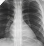
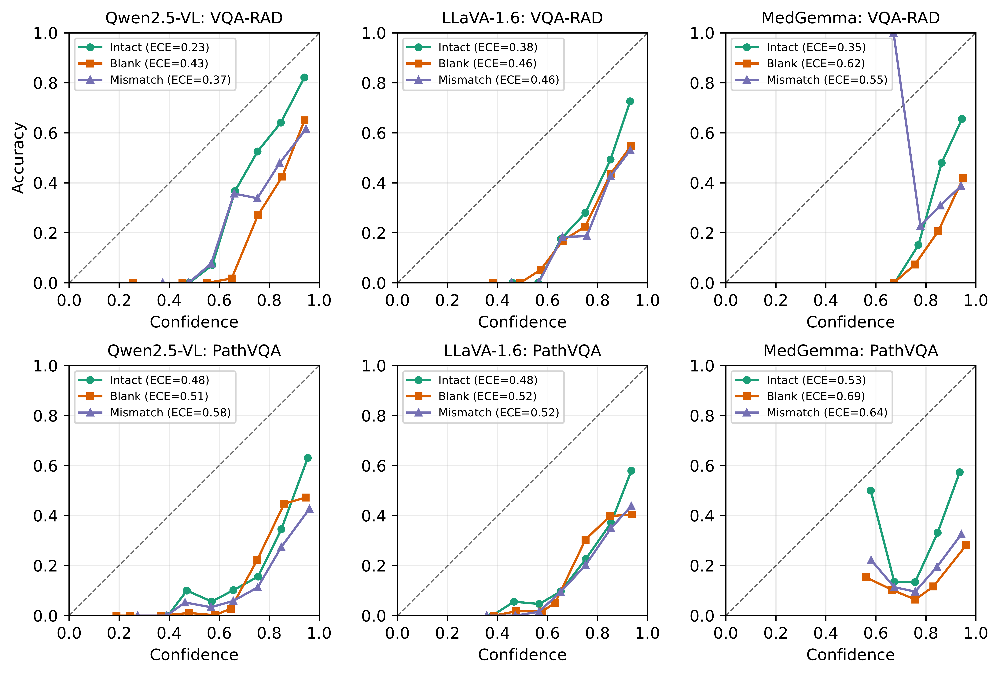
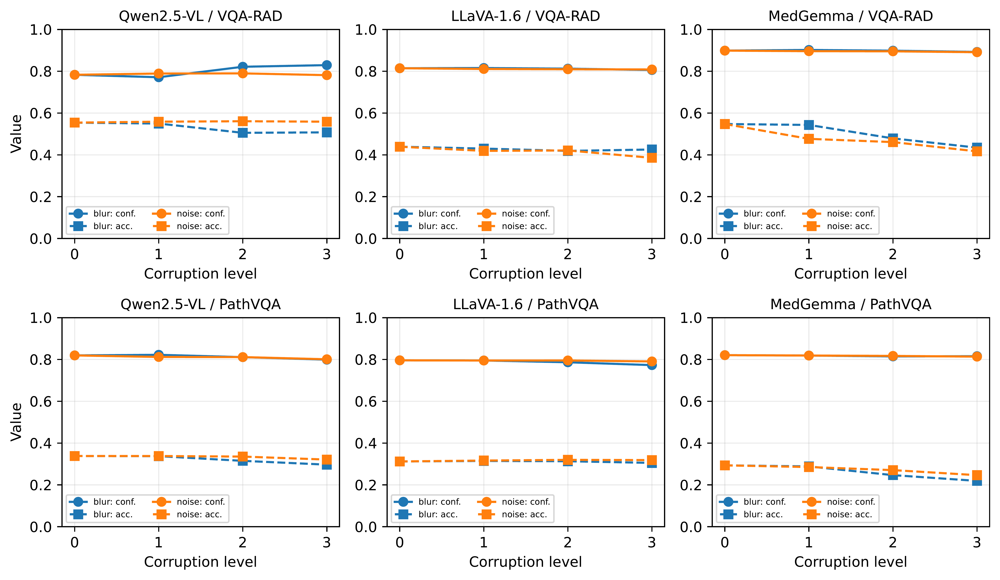

✉ Corresponding authors: howlader@iastate.edu, tirtho@iastate.edu
NeurIPS 2026 Workshop on Medical Reasoning with Vision Language Foundation Models (Med-Reasoner) Atlanta, GA · December 12–13, 2026 · non-archival
Vision-language models (VLMs) are now widely used to answer questions about medical images. A known problem is that they often sound confident even when the image does not support their answer. Earlier benchmarks test whether accuracy drops when the image is blank or wrong, but they miss something just as important: does the model's confidence also fall when the visual evidence is gone? Put simply, is a VLM properly unsure when it cannot really see the image? To find out, we test three locally run VLMs, including a medically specialized one, on two medical VQA datasets, VQA-RAD and PathVQA, under three image conditions: intact, blank, and mismatched. Alongside accuracy, we report calibration (expected calibration error and reliability curves) and how often the answer stays the same when the image changes. The results are worrying. On VQA-RAD, removing or replacing the image lowers accuracy while mean confidence hardly moves and can even rise, so it nearly doubles the calibration error (ECE 0.23 → 0.43). About half of all high-confidence answers become wrong, and 48% of answers do not change at all when the image is swapped. The effect is even stronger on PathVQA, and, strikingly, it is worst for the medically specialized model, which is the most overconfident of the three. Most importantly, the models notice a blank image more easily than a believable but wrong one, which is the more dangerous case in the clinic. We release our evaluation harness so others can run the same calibration checks on medical VLMs. Code: https://github.com/koushikchandra/clear_vlm.
Every (image, question) pair is asked three times with greedy decoding. Confidence is the model's own mean per-token probability of the generated answer.

The real image that goes with the question.
A plain gray picture of the same size that carries no visual evidence.
A different picture drawn at random from the same dataset: believable, but clinically irrelevant.
Models: Qwen2.5-VL-7B-Instruct and LLaVA-1.6-Mistral-7B (general), MedGemma-4b-it (medical). Datasets: VQA-RAD test (n = 451, radiology) and PathVQA test (n = 6,719, pathology).
Accuracy drops for every model on both datasets, but confidence does not drop by a matching amount, so calibration error grows. Medical pre-training does not fix it: on PathVQA, blanking the image halves MedGemma's accuracy (0.293 → 0.139) while its confidence rises (0.821 → 0.830).
Every model keeps its original answer far more often under a mismatched image than under a blank one. The models detect the absence of an image more easily than the presence of a wrong one, which is the more dangerous case in the clinic.
The yes/no questions that look best calibrated on the intact image collapse into confident, image-independent guessing once it is swapped: the 7B models repeat their original yes/no answer 58–65% of the time. Open questions are overconfident in every condition (PathVQA open accuracy only 0.04, ECE above 0.70), so their poor calibration reflects difficulty, not missing evidence.
Under Gaussian blur (radius 1/3/5) and Gaussian noise (σ = 0.05/0.1/0.2), accuracy erodes while the confidence curve stays essentially flat in every panel, and for Qwen even rises. The confidence–accuracy gap, and thus ECE, widens as the image degrades for every model and dataset.
Asked to add “Confidence: N%”, Qwen and MedGemma comply 94–100% of the time, and for both the verbalized number is higher and worse calibrated than the token probability in almost every condition. Asking also inflates the token probability itself (Qwen VQA-RAD intact token ECE 0.23 → 0.33). LLaVA-1.6 gives a parseable number for only 13–26% of items. Asking a medical VLM “how sure are you?” either makes it more overconfident or yields nothing usable.

Reliability diagrams. All three models (columns) on both datasets (rows: VQA-RAD top, PathVQA bottom). Points on the dashed diagonal are perfectly calibrated, and points below it show overconfidence. Under blank and mismatched images the curves drop further below the diagonal and ECE rises, which confirms that confidence does not track the loss of visual evidence. The effect appears for every model family and is worst on the harder PathVQA task and for MedGemma.

Graded corruption. Accuracy (dashed, squares) and mean confidence (solid, circles) as corruption grows. Level 0 is the intact image; levels 1–3 are blur radius 1/3/5 (blue) and noise σ = 0.05/0.1/0.2 (orange). In every panel confidence stays flat while accuracy falls, so the confidence–accuracy gap, and thus ECE, widens; the effect is strongest for MedGemma. A faithful model's confidence curve would fall together with accuracy.
| Model | Dataset | Condition | Acc ↑ | Mean conf. | ECE ↓ | Hi-conf. err. ↓ | Consist. |
|---|---|---|---|---|---|---|---|
| Qwen2.5-VL-7Bgeneral · 7B | VQA-RAD | Intact | 0.554 | 0.783 | 0.229 | 0.308 | – |
| Blank | 0.386 | 0.813 ▲ | 0.427 | 0.468 | 0.157 | ||
| Mismatch | 0.439 | 0.806 ▲ | 0.367 | 0.463 | 0.483 | ||
| PathVQA | Intact | 0.338 | 0.819 | 0.481 | 0.523 | – | |
| Blank | 0.246 | 0.758 | 0.513 | 0.537 | 0.315 | ||
| Mismatch | 0.250 | 0.826 ▲ | 0.576 | 0.643 | 0.347 | ||
| LLaVA-1.6-7Bgeneral · 7B | VQA-RAD | Intact | 0.439 | 0.815 | 0.375 | 0.449 | – |
| Blank | 0.328 | 0.787 | 0.459 | 0.527 | 0.366 | ||
| Mismatch | 0.353 | 0.813 | 0.461 | 0.545 | 0.528 | ||
| PathVQA | Intact | 0.312 | 0.796 | 0.484 | 0.564 | – | |
| Blank | 0.224 | 0.746 | 0.521 | 0.599 | 0.193 | ||
| Mismatch | 0.270 | 0.794 | 0.524 | 0.626 | 0.360 | ||
| MedGemma-4Bmedical · 4B | VQA-RAD | Intact | 0.548 | 0.899 | 0.351 | 0.418 | – |
| Blank | 0.231 | 0.847 | 0.617 | 0.677 | 0.104 | ||
| Mismatch | 0.337 | 0.886 | 0.550 | 0.653 | 0.226 | ||
| PathVQA | Intact | 0.293 | 0.821 | 0.527 | 0.590 | – | |
| Blank | 0.139 | 0.830 ▲ | 0.691 | 0.823 | 0.078 | ||
| Mismatch | 0.173 | 0.815 | 0.643 | 0.766 | 0.093 |
Bars visualize ECE (longer = worse). ▲ mean confidence higher than with the intact image. Highlighted: ECE ≥ 0.6 or high-confidence error ≥ 0.75. Swipe sideways on small screens.
Three locally run VLMs on VQA-RAD (n = 451) and PathVQA (n = 6,719) under three image conditions. Removing or replacing the image lowers accuracy, yet confidence stays high and calibration error (ECE) goes up: every model stays sure of itself exactly when it can see the least. The medically specialized model (MedGemma) is the most overconfident of the three. Consist. is the fraction of answers identical to the intact-image answer.
Accuracy-only leaderboards hide this failure. The mismatched case is the most dangerous: a wrong scan attached to the right patient, from a mislabeled study or a PACS error, yields a smooth, confident, wrong answer a clinician has little reason to doubt. That the medical model is the most overconfident warns against assuming a specialized model is safer.
@inproceedings{howlader2026clear,
title = {Calibrating Medical Vision-Language Reasoning Under Image Corruption},
author = {Howlader, Koushik and Ghafoor, Zainab and Bhattacharjee, Ushashi and
Chakraborty, Sayantan and Bhattacharjee, Tanusree and Roy, Tirtho},
booktitle = {NeurIPS 2026 Workshop on Medical Reasoning with Vision Language
Foundation Models (Med-Reasoner)},
year = {2026},
url = {https://medreason-clear.github.io/}
}